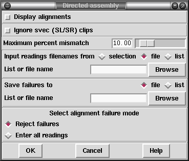

This assembly method assumes that a preprocessing program, such as an external assembly engine, has been used to map the relative positions of the readings to within a reasonable level of accuracy or tolerance. The assembly is "directed" by use of special "Assembly Position" or AP records included in each reading's experiment file. It is expected that these AP records will be added to the experiment files by the preprocessing program, or by a program which parses the output from such a program, and so the details given below are not of interest to the average user.
The experiment file for each reading must contain a special "Assembly Position" or AP line that defines the position at which to assemble the reading. The position is not defined absolutely, but relative to any other reading (the "anchor reading") that has already been assembled. The definition includes the name of the anchor reading, the sense of the new reading, its offset relative to the anchor reading and the tolerance. i.e.:
AP anchor_reading sense offset tolerance
The sense is defined using + or - symbols.
The offset can be of any size and can be positive or negative. Offset positions are defined from 0. i.e. the first base in a contig or a reading is base number 0.
For normal use tolerance is a non-negative value, and the first base of the new reading must be aligned at plus or minus "tolerance" bases of "offset". If tolerance is zero, after alignment the position must be exactly "offset" relative to the anchor reading. If tolerance is negative then alignment is not performed and the reading is simply entered at position "offset" relative to the anchor reading.
To start a new contig the reading must include an AP line containing the anchor_reading *new* and the sense.
Example AP line:
AP fred.021 + 1002 40
Example AP line to start a new contig:
AP *new* +
The algorithm is as follows. Get the next reading name, read the AP line, find the anchor reading in the database, get the consensus for the region defined by anchor_reading + offset +/- tolerance. Perform an alignment with the new reading, check the position and the percentage mismatch. If OK enter the reading.
Obviously the way the positions of readings are specified is very flexible but one example of use would be to employ a file of file names containing a left-to-right ordered list of reading names, with each reading using the one to its left as its anchor reading. In this way whole contigs can be entered.
Although not specifically designed for the purpose this mode of assembly can be used for "assembly onto template".

If required, the alignments can be shown in the Output window by selecting "Display alignments". Only readings for which the "Maximum percent mismatch" after alignment is not exceeded will be entered into the database, unless the "enter all readings" box is checked. In that case a reading that does not match well enough will be placed in a new contig. Specifying a "Maximum percent mismatch" of zero has a special meaning; it implies that there should be no mismatches and so no alignments need to be performed, and hence the consensus does not need to be computed either. For data that has already been padded and aligned using an external tool (such as an external assembly program) setting Maximum percent mismatch to zero can have a significant improvement in the speed of Directed Assembly.
The "Ignore svec (SL/SR) clips" option controls whether sequencing vector clip points should be considered when setting the hidden data sections for the sequence. With this option enabled only the quality clip (QL/QR) experiment file records will be used.
Assembly usually works on sets of reading names and they can be read from either a "file" or a "list" and an appropriate browser is available to enable users to choose the name of the file or list. If just a single reading is to be assembled choose "single" and enter the filename instead of the file or list of filenames.
The routine writes the names of all the readings that are not entered to a "file" or a "list" and an appropriate browser is available to enable users to choose the name of the file or list.
It is important to note that the algorithm assumes that readings are entered in the correct order, i.e. a reading can only be entered into the defined AP position after the reading relative to which its position is defined. The order of the readings is defined by the order in the list or file of file names, and hence should be ordered by the external assembly engine. But if the browser is used to select a batch of sequences, they are unlikely to be in the correct order by chance, so care must be taken in its use. If reading X specifies an anchor reading that has not been entered the algorithm will start a new contig starting with X.